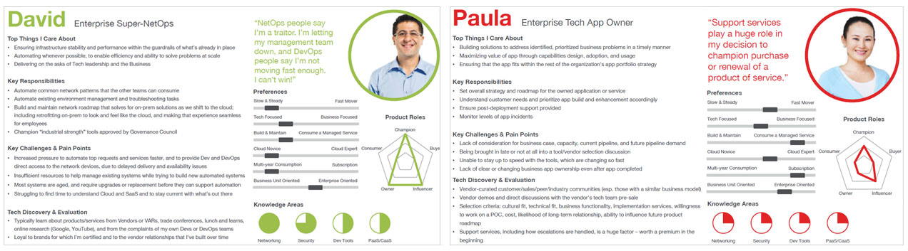
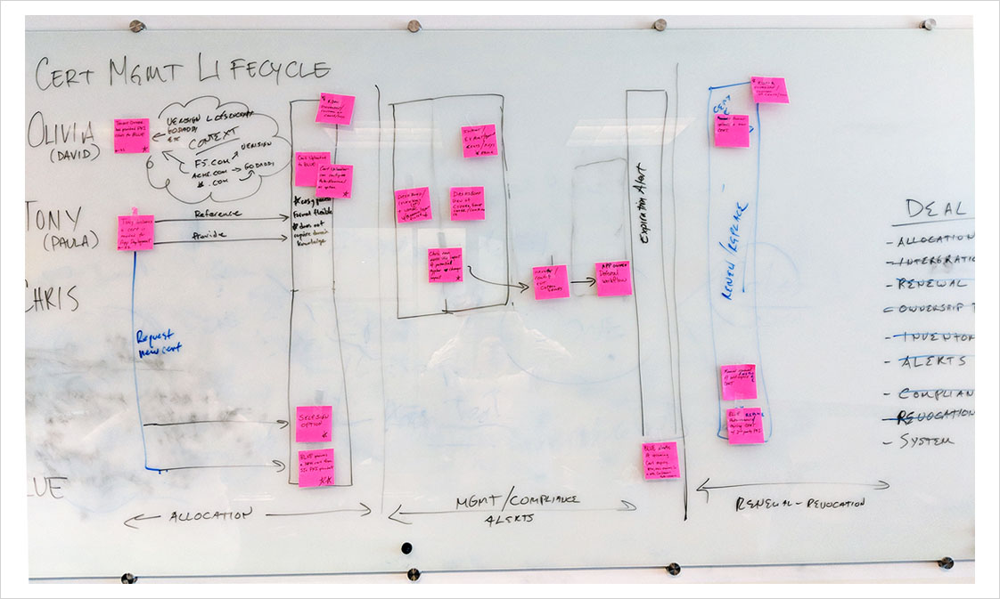

I joined F5 Networks in 2014, with no background on networking whatsoever. Not going to lie, it was rough waters the first couple of months. A total absence of any reading material for onboarding people on the team did not help things either. UX as a discipline was new to F5 and there was an assumption that anyone hired would have some networking domain knowledge. So I started to read any documentation thaclass="regularli"t I could make sense of, attended training classes, talked to a lot of people, basically taking help I could. I inherited this UI that was referred to as the "bladed" UI, which was pretty much what it was, literally an assortment of blades listing hundred's of configuration objects.
BIG-IQ is a family of separate, persona-centric, products with different needs and different capabilities, but there were also some overlap in common management tasks which were replicated within each module in differnt ways. This caused a lot of inconsistency within the product because the user had to learn how to accomplish the same task in 3-4 different multiple ways. Limitations include a number of usability concerns:
- - UI doesn’t promote understanding of complex relationships
- - Inefficient to use
- - Difficult to find objects, settings
- - Lack of consistency among common workflows
“I wish there was better linkage of information so I can click through from the virtual server to the pool and to the pool member without having to bounce back out.” (Sam@Infospace)
There was some research done prior to my taking on this assignment. So I started there.
We had some personas in place, next steps were to map out journey maps for these core personas.
Design Symmetry Design patterns that scale from 1 device to many Consistency eases migration for customers Leverage development investment across products Viewed as a time saver -Cuts out a lot of repetitive navigation
I collaborated with the researcher, internal stakeholders and our internal customers to create journey maps for critical workflows for our key personas.
